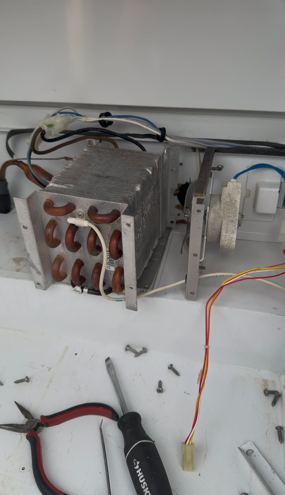
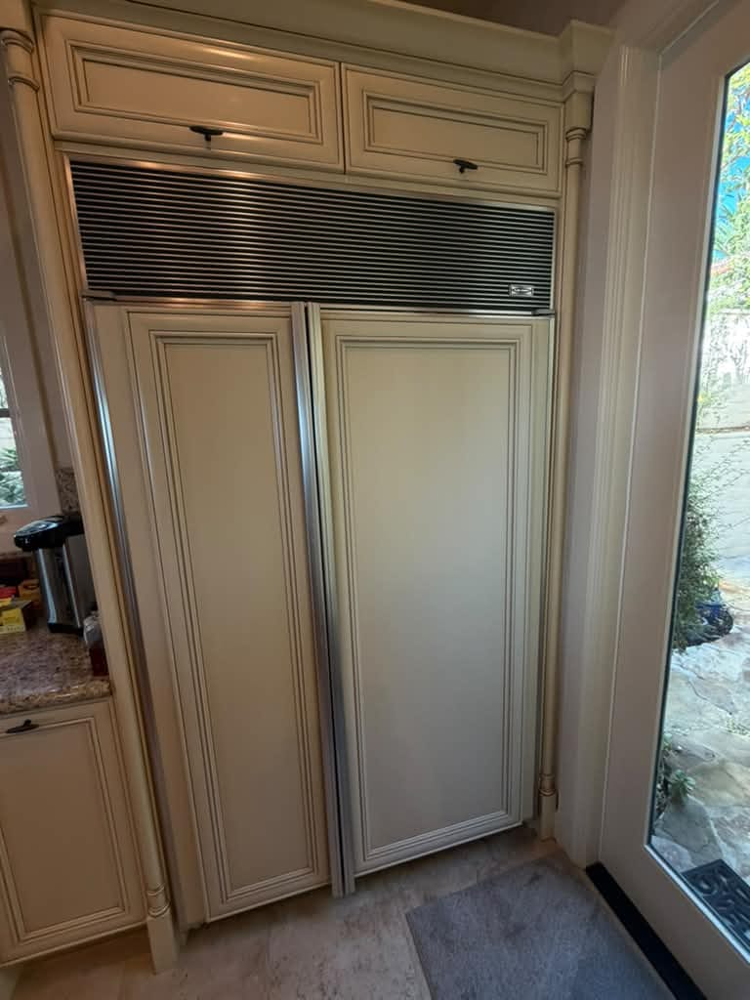
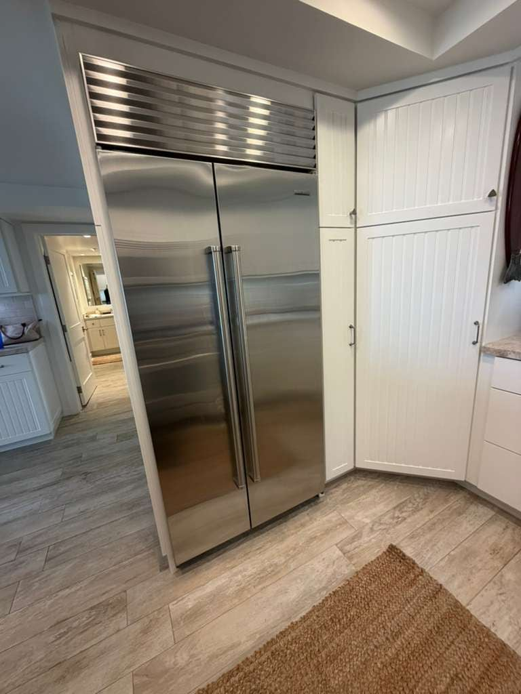
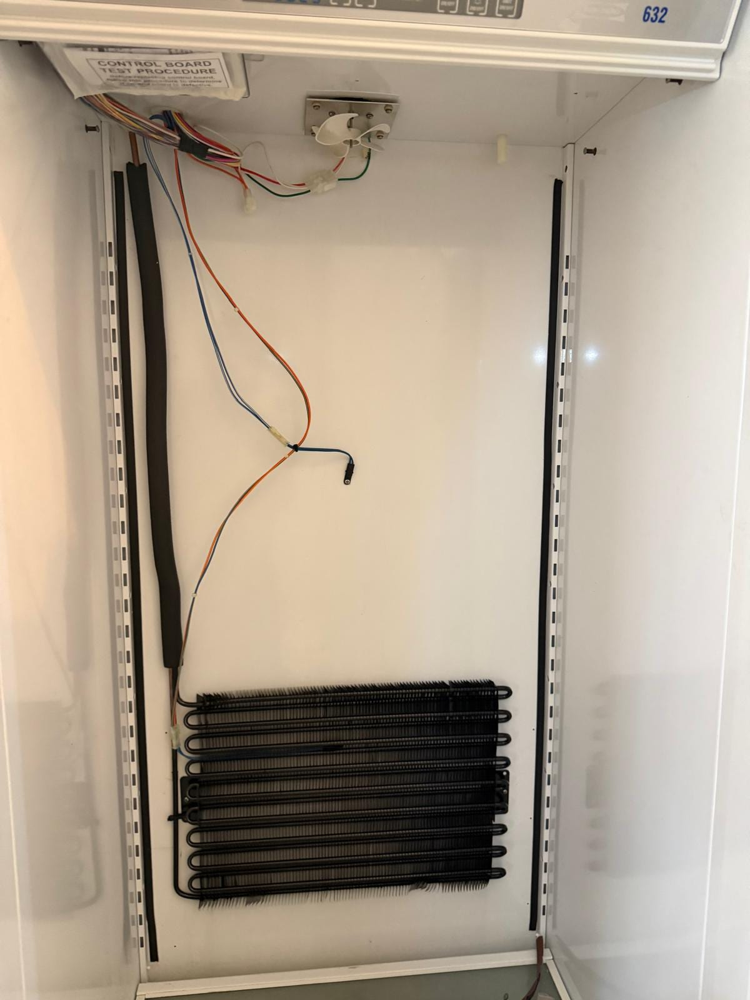

Sub-Zero Appliance Repair in Orange County, CA
Built-in refrigerators, column units, and wine storage. We know Sub-Zero; same-day service available.
5.0 · 156 Google reviewsMon–Sat, 8am–7pm.

What to expect
- Flat $99 diagnostic feeApplied toward the repair if you approve the work.
- Written quote firstItemized, before any work starts.
- 90-day parts, 30-day laborWarranty on every repair.
- Same-day serviceCall or request online.
Family-owned since 2017 · Licensed, bonded & insured
Recent Sub-Zero Repairs
Recent Sub-Zero refrigerator jobs: scheduled maintenance on a built-in side-by-side in Newport Beach, a service call in San Clemente for a water leak and drain-line cleaning, a one-off coil and compressor replacement in San Diego, outside our service area, and an under-counter refrigerator evaporator leak repair in Palm Springs, outside Orange County.
Newport Beach, CA
Sub-Zero Refrigerator Evaporator Coil Cleaning

San Clemente, CA
Sub-Zero Refrigerator Water Leak & Drain Line Cleaning

San Diego, CA: one-off job outside our service area
Sub-Zero Refrigerator Evaporator Coil and Compressor Replacement
What Our Customers Say
From our 156 verified 5-star Google reviews
AG showed up on time and instantly knew what the problem was. This was the second time he has been to our house and each time he has done a good job for us.
They were fast and efficient and very pleasant. This is the second time I have used their services and will not hesitate to use them again.
Excellent experience from start to finish! The team did a fantastic job repairing our Sub Zero refrigerator. They were able to locate the original parts needed, complete the repair, and get everything installed very quickly, which meant very little downtime for us.
They were punctual, communicated clearly throughout the entire process, and the work was extremely clean and professional. Everything was handled efficiently and the finished result exceeded my expectations.
It's not always easy to find a company that is reliable, knowledgeable, and gets the job done right the first time. Highly recommend them for any appliance repair or installation!
From Call to Fixed: How a Sub-Zero Repair Works
From your first call to a fully working Sub-Zero: here is exactly what happens at each step.
Request a RepairCall or Request Online
Reach us at (949) 629-5365 or submit the contact form. Tell us the model number and symptoms; we'll get you scheduled the same day if possible.On-Site Diagnosis
A technician arrives in a 2-hour window, inspects the unit, and identifies the root cause. Sub-Zero diagnostics require experience; we don't guess.Upfront Quote
You get a clear, itemized quote before we start. No surprise charges. The $99 diagnostic fee applies toward the repair if you choose to proceed.Repair & Warranty
Most repairs finish the same day. Every repair carries a 90-day parts and 30-day labor warranty: if the same issue returns within 30 days, we come back at no charge.
Pricing & Discounts
- $99 diagnostic fee: applied toward your repair when you approve the work. If you decide not to proceed, the $99 covers the visit.
- Multi-unit visits: first unit $99, each additional unit on the same visit $49.
- 20% off labor for repeat customers and seniors 60+ (cannot combine with other offers).
Estimates vary by brand, part availability, and diagnosis. Final quote is provided before repair. See full pricing guide
Diagnostic visit$99
- Applied toward the repair when you approve the work
- Itemized written quote before any work starts
- You decide whether to proceed
BI Series, 700 Column, and PRO 48: Every Sub-Zero Generation We Repair
From classic Pre-2000 models to the current 700 Series integrated columns, we service every Sub-Zero generation found in Orange County homes.
- BI Series: Built-In Refrigerators
- BI-30U, BI-36U, BI-42S, BI-48S, and more. The classic stainless built-ins that anchor high-end OC kitchens. Dual-evaporator design keeps food compartments independent.
- 700 Series: Integrated Column
- 700TR, 700TC, and full-height column units. Panel-ready, fully integrated design. These use a different sealed-system configuration than BI; we diagnose them correctly.
- 400 Series: Undercounter & Wine
- 424FS, 424G, 427R, and dual-zone wine storage. Common in OC home bars and butler's pantries. Condenser fan and thermostat issues account for most service calls.
- PRO 48: Professional Series
- The flagship all-stainless-interior unit. Heavy-duty compressor and evaporator system. We handle ice maker, sealed-system, and hinge repair on all PRO configurations.
- Designer Series: Panel-Ready
- DET3650, DEU2450, and fully integrated overlay-panel models. Cabinet-flush installation makes access trickier; our technicians know how to service these without damaging the cabinetry.
- Classic & Pre-2000 Models
- Older Sub-Zero units built before the current series. Many parts are still available. Sub-Zero's longevity means a 25-year-old unit can still be worth servicing; we'll give you an honest assessment.
Dual-Evaporator Failures, Sealed System, and Sub-Zero's Known Issues
Sub-Zero units are built to last decades, but each model family has specific failure patterns our technicians see regularly.
- Dual-Evaporator Imbalance
- Fresh food warm, freezer fine (or vice versa). A frosted evaporator coil blocks airflow to one compartment. Usually a defrost heater or thermistor; fixed same-day in most cases.
- Sealed-System / Compressor Failure
- Refrigerant leak, clogged dryer, or compressor wear. The most expensive Sub-Zero repair but often still cheaper than a new unit. We diagnose before recommending sealed-system work.
- Vacuum Condenser Fan Failure
- A squealing or grinding noise from the back of the unit, followed by loss of cooling. The condenser fan draws air through the condenser coil; when it fails, the fridge overheats.
- Ice Maker Module / Fill Valve
- No ice production, overfilling, or hollow cubes. The fill valve and ice maker module are the most-replaced parts on Sub-Zero BI units. Most ice maker calls are resolved in one visit.
- Control Board / UI Failure
- Blank display, temperature readings that won't respond, or the unit rebooting intermittently. Control board replacement on newer Sub-Zero units is a half-day job.
- Door Gasket Compression Loss
- A gasket that no longer seals properly lets warm air in, causing the compressor to run constantly and frost to build on the back wall. Gasket replacement is one of the quickest fixes we do.
- Defrost Heater / Drain Tube Blockage
- Ice buildup on the freezer floor or water pooling under the bottom drawer. A failed defrost heater or blocked drain tube causes melt water to refreeze instead of draining properly.
- Hinge Cartridge Wear
- Heavy panel-ready or stainless doors put stress on the hinge cartridges over time. A sagging door that no longer closes flush is almost always a hinge issue, not a frame problem.
Sub-Zero's Dual-Compressor Architecture: Why It Changes the Diagnosis
Sub-Zero BI and PRO series units run two separate compressors with two independent evaporators: one dedicated to the fresh food compartment, one to the freezer. This is the defining mechanical difference between a Sub-Zero and a standard refrigerator. When the fresh food section is warm but the freezer is fine, the culprit is almost always the fresh-food evaporator or its defrost circuit. A technician unfamiliar with the dual-evaporator design may misdiagnose this as sealed-system failure and quote a far more expensive repair.
The vacuum-insulated door panels on newer Sub-Zero BI units carry a significant share of the unit's thermal resistance. A door that seals properly but has a compromised vacuum panel will drive higher-than-expected compressor runtime and energy consumption. Door gasket replacement is sometimes the right fix. If the gasket is intact and the unit is still working too hard, the panel may be the cause. We check both before recommending parts.
Sub-Zero's NSF-certified fresh-food zone maintains specific temperature and humidity for produce. When customers notice vegetables wilting earlier than expected, we check the fresh-food zone humidity dampers before assuming the evaporator or sensor is at fault. Dampers can stick or fail to actuate; the fix is usually a mechanical adjustment rather than a parts replacement.
Sub-Zero Repair Costs: What to Expect in Orange County
Sub-Zero repairs cost more than standard appliances. A new Sub-Zero built-in starts at $5,000. For most faults outside of sealed-system failure, repair is the obvious financial choice.
| Repair Type | Typical Range |
|---|---|
| Service call / diagnostic: Orange County market average (often credited toward repair) | $95 – $150 |
| Door gasket replacement | $250 – $450 |
| Ice maker module / water fill valve | $350 – $650 |
| Defrost heater / thermistor | $350 – $600 |
| Vacuum condenser fan motor | $400 – $700 |
| Evaporator fan motor | $450 – $750 |
| Hinge cartridge (per door) | $400 – $700 |
| Control board (UI / main) | $700 – $1,200 |
| Compressor / sealed-system service | $1,200 – $2,500+ |
Estimates vary by brand, part availability, and diagnosis. Final quote is provided before repair. See our full appliance repair cost guide for broader Orange County pricing context.
Sub-Zero repair across Orange County
Universal Appliances Repair Group Inc. provides Sub-Zero appliance repair across Orange County, California, including built-in refrigerators (BI series), integrated column refrigerators and freezers (700 Series), undercounter and wine storage units (400 Series), and pre-2016 Classic models. Our technicians handle sealed-system service, dual-evaporator failures, ice maker modules, and electronic control board diagnostics.
We serve Newport Beach, Irvine, Anaheim, Santa Ana, Huntington Beach, Costa Mesa, Mission Viejo, Yorba Linda, and surrounding cities, with same-day service available. Call (949) 629-5365 or book online to schedule a Sub-Zero repair visit.
What Orange County Sub-Zero Owners Ask Us
The most common questions from Sub-Zero owners across Irvine, Newport Beach, and surrounding Orange County cities.
Still have a question? Call (949) 629-5365.
Yes. We service Sub-Zero built-in and integrated refrigerators across Orange County, including the BI series, 700 Series column units, and pre-2016 Classic models. Same-day appointments are available when a technician is open; call (949) 629-5365.
Sealed-system work typically runs $1,200 to $2,500 for Sub-Zero units depending on the model and what the repair involves: compressor replacement, refrigerant recharge, or evaporator repair. We give you a firm quote before any work starts. The $99 diagnostic fee is credited toward the repair if you proceed.
This is a classic dual-evaporator imbalance, the most common Sub-Zero service call we handle. The fresh-food evaporator coil is often iced over, which blocks airflow to that compartment while the freezer side runs fine. A defrost heater or thermistor failure is usually the cause. Most cases are diagnosed and repaired in a single visit.
Often, yes. Sub-Zero units can have model-specific repair and replacement considerations, and parts availability depends on the exact model and diagnosis. We will provide a written repair estimate so you can compare it with a current replacement-and-installation quote for a comparable model.
Yes. We service Sub-Zero's 400 Series wine storage and undercounter refrigerators, including dual-zone wine units and beverage centers. Common issues include condenser fan failure, thermostat drift, and control board faults, most resolved same-day.
Repairs like ice maker replacement, door gasket swap, fan motor, or drain clearing are usually completed the same day. Sealed-system repairs or jobs requiring special-order parts may take 2–4 additional days once the part arrives. We'll confirm the timeline during diagnosis.
Sub-Zero units are built to run 20+ years, and a new one costs $5,000 to $12,000. Unless the compressor and sealed system have both failed on a very old unit, repair almost always makes financial sense. We give you the honest diagnosis and let you decide; no upselling.
Yes. We service Sub-Zero's 700 Series integrated column refrigerators and freezers, including the 700TR, 700TC, and full-height column units. These models use a different sealed-system configuration than the BI series, and we diagnose them accordingly.
Sub-Zero's Kitchen Partners: Wolf, Miele, Thermador, and Viking
Sub-Zero refrigerators almost always share a kitchen with Wolf ranges. We service the full luxury kitchen lineup so one call handles all your premium appliances.
- DCSProfessional gas and dual-fuel ranges, cooktops, and California-built outdoor grills. Bake igniter and sealed-burner specialists.
- WolfDual-fuel ranges, wall ovens, cooktops, and steam ovens. Sub-Zero's sister brand.
- MieleGerman luxury dishwashers, washers, dryers, and ovens. F11/F19 error code specialists.
- VikingPro-style ranges, wall ovens, and built-in refrigerators. VGSC igniter experts.
- ThermadorPro Grand ranges, Sapphire dishwashers, and Freedom column refrigerators.
- DacorSamsung-backed American luxury brand. Heritage ranges, ovens, and refrigerators.
From Our Blog
- Sub-Zero Refrigerator Not Cooling? 5 Causes and What to Do in Orange County
- Sub-Zero Repair Cost in Orange County: What to Budget
- Sub-Zero: Repair or Replace? An Honest Decision Guide
- Built-In Refrigerator Repair in Orange County: Sub-Zero, Thermador & Miele Guide
- Wine Cooler Not Cooling in Seal Beach? Causes and Fixes
Need Sub-Zero Repair in Orange County?
Same-day service available. Call now or book online; a technician will confirm your appointment within the hour.
Call (949) 629-5365
Request a Repair
Mon–Sat, 8am–7pm